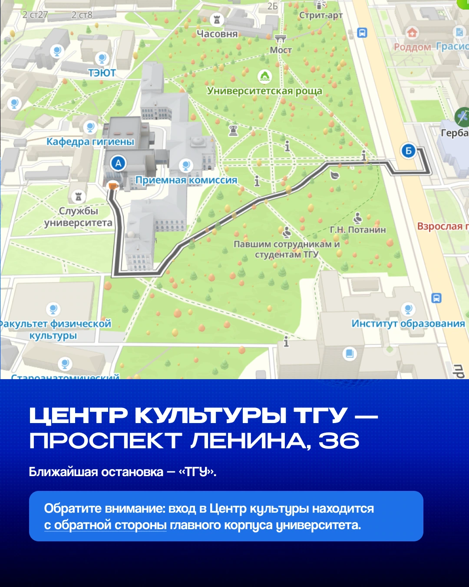
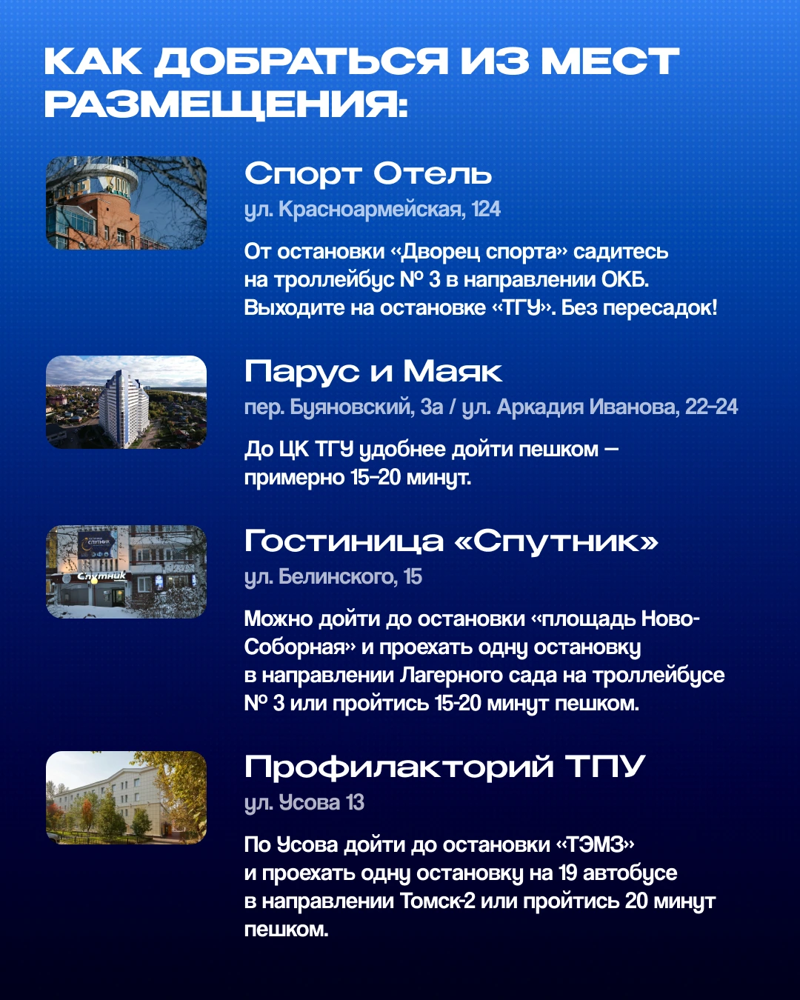
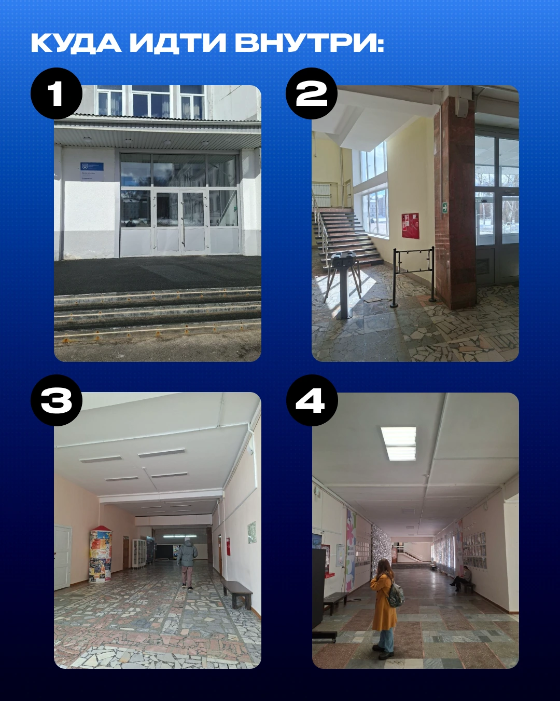
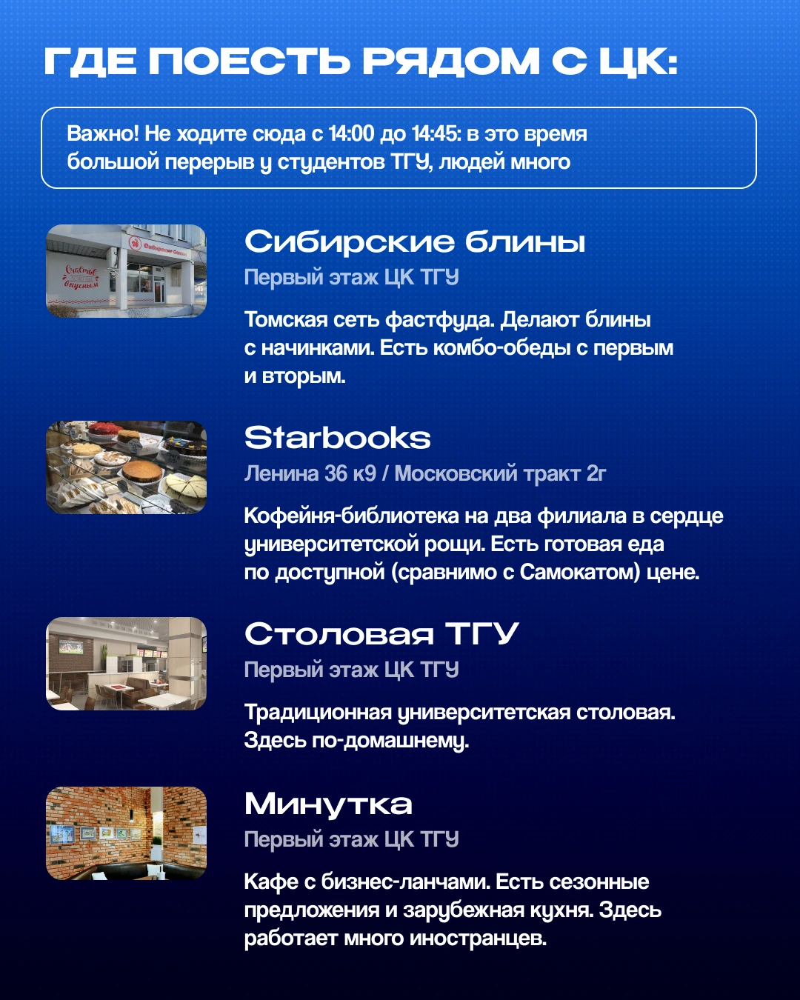

Моя работа в Томском КВН
- Тимлид медиакоманды
- Организатор игр
- Редактор и копирайтер
- Дизайнер
- Видеомонтажёр
Лига КВН Большого университета Томска проводит городские игры. Я отвечал за коммуникацию вокруг сезона, от анонсов до материалов, с которыми команды приезжали на площадку.
Что этот опыт даёт UX-редактору
О той же игре зрителю нужно сообщить дату и место, а команде — объяснить, как подготовиться и куда идти. Этот опыт помогает мне писать для конкретной задачи: в интерфейсе выделять информацию для решения, раскладывать сложное действие по шагам и согласовывать текст с визуальными подсказками.
Тексты и редактура
Составлял контент-планы, готовил пресс-релизы и презентации, редактировал материалы начинающих копирайтеров. Для иногородних команд собрал карточки с маршрутами от гостиниц до зала.








Медиакоманда и продвижение
Координировал работу копирайтера, видеографа, репортёра и организатора. Подбирал площадки для публикаций и работал с региональными СМИ и партнёрами. Адаптировал айдентику КВН для томской лиги, оформлял афиши и баннеры для печати и соцсетей, монтировал короткие видео.


Организация игр
Согласовывал сроки с подрядчиками и координировал волонтёров на площадке
Работа в цифрах
- концертов в Центре культуры ТГУ
- 15
- игроков, которых я координировал
- 120
- редакторских просмотров при подготовке игр
- 40+
- зрителей на концертах за всё время
- 9 000+
- городов, представленных на играх
- 20
- постоянных партнёров
- 10